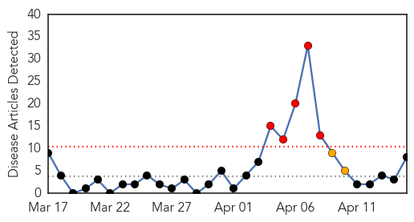

30 Day Trends
Web: 5 alerts, 2 warnings
Twitter: 1 alerts, 0 warnings
Top Articles:
- 0.991
- Precautions against vector-borne diseases highlighted during World Health Day
- 0.989
- Pitt CVR and Sanofi Pasteur collaborate to assess the effectiveness of a dengue vaccine
- 0.977
- More than 600 malaria cases reported in Qatar last year
- 0.946
- Epidemic control: Hospitals told to send dengue patients’ data to Health Department
- 0.791
- Centre reports dengue cases
- 0.780
- Solomon Islands Flooding – UNICEF Responds to Urgent Water and Sanitation Needs - Solomon Islands
- 0.695
- International Atomic Energy Agency
- 0.578
- Evacuation centres in Solomons struggling to cope - UNICEF
Top Tweets:
-
No tweets found for Apr 15, 2014
Web/News Articles
Tweets

Article Locations

Article Confidences